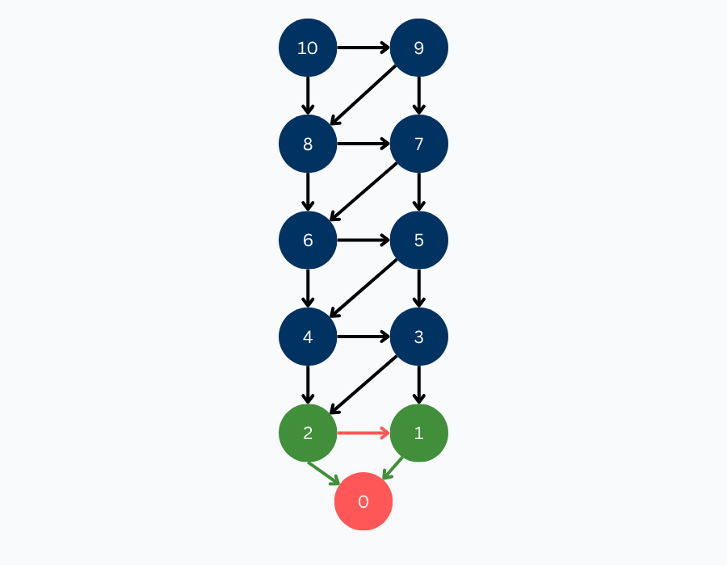
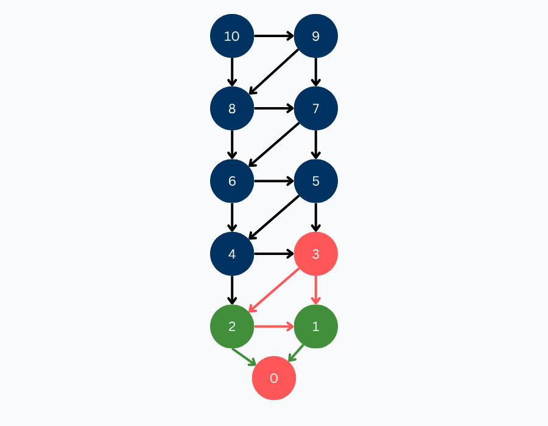
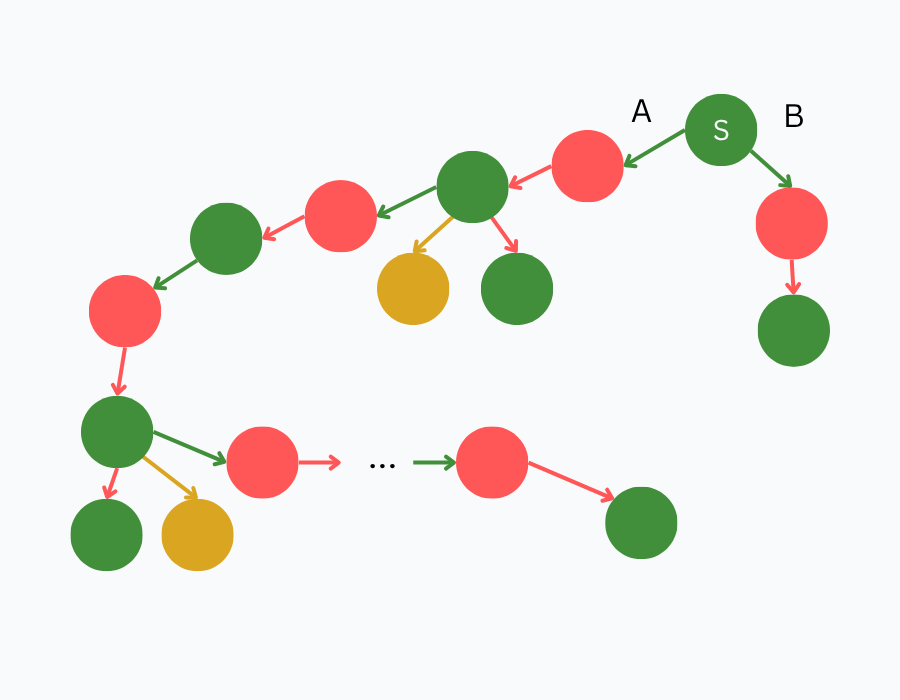
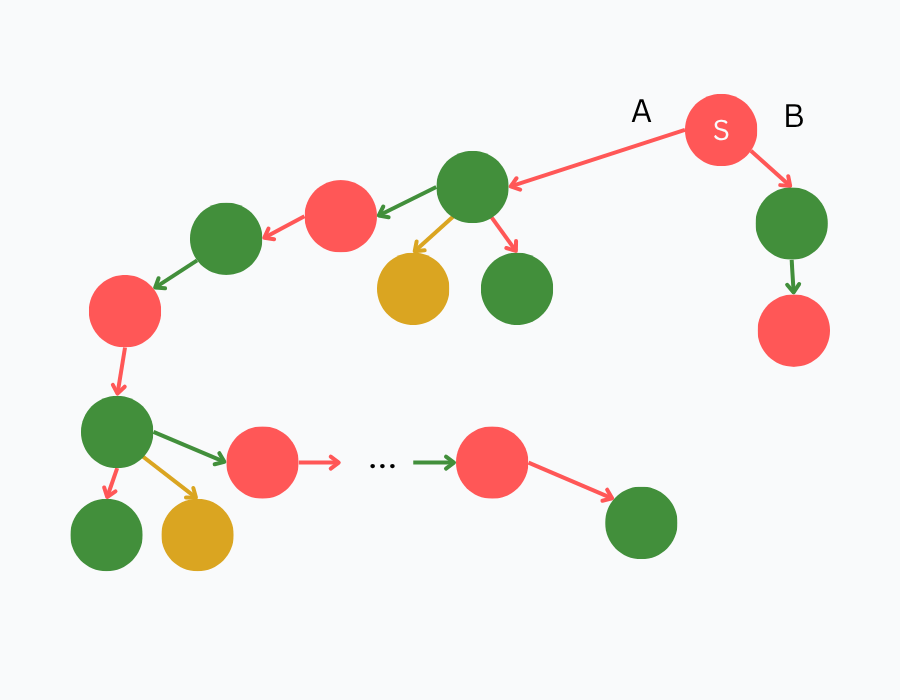
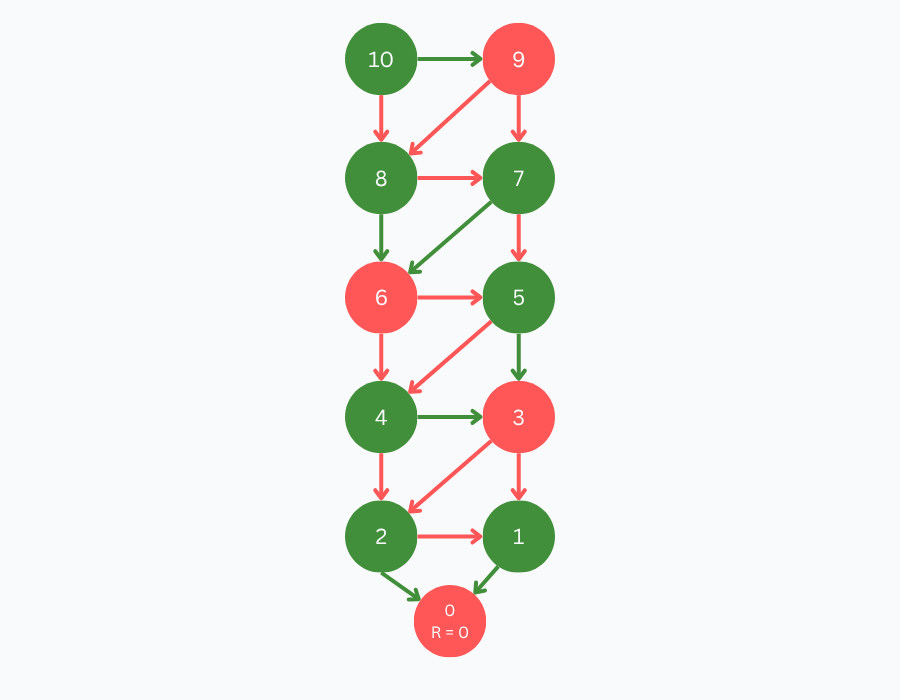

Solving a Game
With the foundation now laid out, we have all the tools available to solve a game. Once again, let's consider 10-to-0-by-1-or-2 and its game tree:

In order to assign values to each position in the game tree, we can work our way up from the primitive positions using the rules we defined earlier for assigning position values. Remember that the only primitive position in this game is the position with a count of 0, which we assigned a value of LOSE.

From here, we can assign values to the positions with counts of 1 and 2. As it was defined previously, a winning position is any position that has a losing position as one of its children, hence we attribute position '1' and '2' as winning. You can imagine the reasoning behind this:
- You are at a state with 1. By removing 1, you win the game. You are giving your opponent a losing position (0) they can't make any moves from here.
- You are at a state with 2. You only remove 1. The arrow is red because you are letting your opponent win in this case. Notice that because we have at least one losing child, we are in a winning state.

We continue with position '3.' Since all of its children have been solved and are winning positions, it implies that it is a losing position. If you are at a state with 3 items, you can only take away 1 or take away 2. Either way, your opponent can win from either of these positions.

This same pattern applies recursively up the tree. Since '3' is a losing position, '4' and '5' are winning positions. Since all children of '6' are winning positions, then '6' is a losing position. Since '6' is a losing position, '7' and '8' are winning positions. Since both children of '9' are winning positions, '9' is a losing position. Finally, our starting position, '10,' has one losing child, hence '10' is a winning position.

We explored the entire state space, and attributed each position a value. We did it! We solved our first game!
Remoteness
Having now understood how to represent and solve a game, we arrive at the concept of 'remoteness.' Knowing a position's value tells us the ultimate outcome of the game, assuming perfect play. But, in practice, especially for us imperfect humans, that's not always enough. The more decisions a player makes to reach the end of the game, the more chances there are to make mistakes. To further illustrate this, consider the game tree below. Suppose you're the player at position 'S,' a winning position, with two options: move 'A,' which leads to a long and complex branch, or move 'B,' which forces a win in just one move. Which would you choose?

Now, imagine the values are flipped: 'S' is now a losing position. Which move would you make now? Which move would give you a better fighting chance?

This is the motivation behind remoteness: assuming perfect play, we're measuring how far a position is from the end of the game. Before defining remoteness formally, it's helpful to revisit what we really mean by perfect play.
Perfect Play Under Remoteness
Instead of redefining perfect play, we will define perfect play under remoteness such that players will always act optimally based on the value of positions and follow this priority order (Cheung, 2023):
- If forcing a win is possible, then force a win in as few moves as possible.
- Otherwise, if forcing a tie is possible, then force a tie in as few moves as possible.
- Otherwise, force a lose in as many moves as possible.
Essentially, if we are winning or tying, we want to win or tie as fast as possible, if a draw is possible, then we want to stay in the draw, otherwise, we want to delay the loss as much as possible.
With the formal definition of perfect play out of the way, let's (finally) define remoteness. "A position's remoteness is the number of moves until the end of the game assuming perfect play" (Cheung, 2023). In game tree terms, remoteness is the number of edges along the directed path from the current position to a primitive position, as determined by perfect play.
Solving 10-to-0-by-1-or-2 with Remoteness
As an example, let's calculate the remoteness of the positions of our go-to game 10-to-0-by-1-or-2. Similar to how we solved the game, we start with our primitive positions. By definition, since a primitive position indicates the end of the game and has no available moves, the position '0' is attributed to the remoteness of 0.

After establishing the remoteness of '0,' we propagate remoteness backward through the game tree. Since both '1' and '2' are winning positions, as per the perfect play assumption, they take the lowest remoteness of their losing children + 1.
Position '3' is a losing position, hence it takes the maximum remoteness of its children + 1 (2). Consequently, position '4' and '5' take the remoteness of 3. This pattern is replicated until visiting all positions.
Summary
To summarize how remoteness is computed under perfect play, gamescrafter Cameron Cheung provides the following rules in his master's technical report:
- The remoteness of a primitive position is 0.
- The remoteness of a non-primitive win position is 1 + the remoteness of minimum-remoteness losing child position.
- The remoteness of a non-primitive lose position is 1 + the remoteness of the maximum-remoteness child position.
- The remoteness of a non-primitive tie position is 1 + the remoteness of the minimum-remoteness tying child position.
We abide by the following convention: "We define the following ordering of value-remoteness pairs as worst to best: low-remoteness lose < high-remoteness lose < draw < high-remoteness tie < low-remoteness tie < high-remoteness win < low-remoteness win" (Cheung, 2023).
Practice Questions
Test your understanding of solving with the questions below. Click an answer to check it.